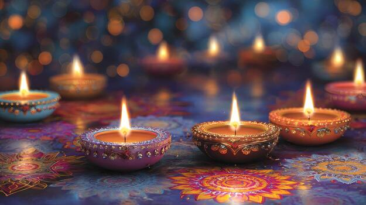
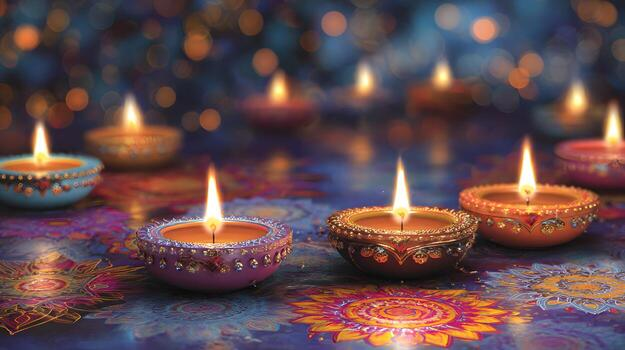

Brief Description of India
India is located in Southern Asia as it is made up of 28 states, all with a variety of different languages and ethnic groups in many regions. Its capital is located in New Delhi. India is the most populated country at a global level; with a population of over 1.46 billion people! This country is special because of its rich cultural heritage that is commonly known for like Diwali (the festival of lights), paramount landmarks (e.g. Taj Mahal), important advancements in science and technology, and history.
The flag of India is a tricolor with saffron, white, and green horizontal stripes and a navy blue wheel in the center, symbolizing national pride, unity, and progress.
 
